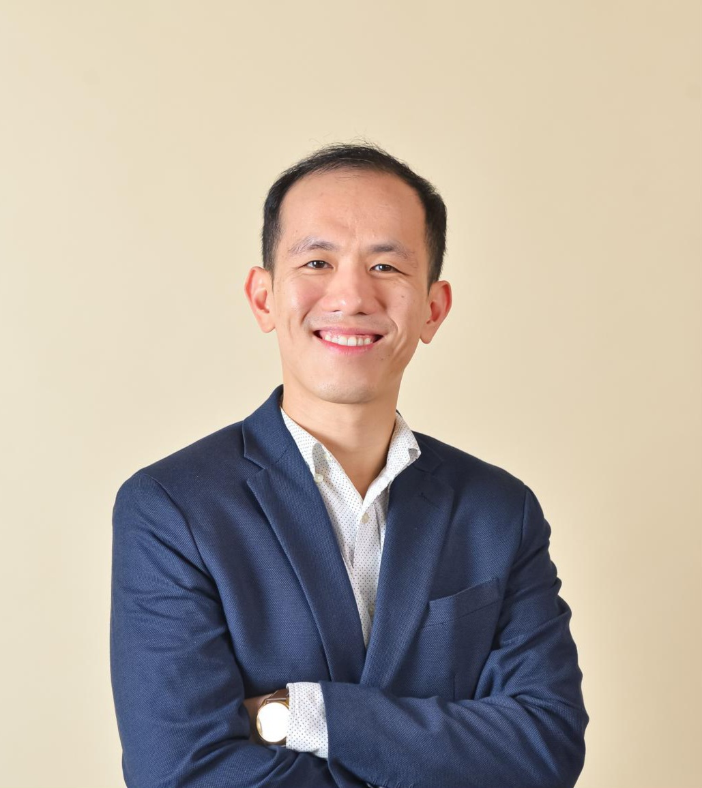

2021
Ph.D. in Chemical Engineering
University of California, Santa Barbara
With Emphasis in Bioengineering
Lecturer · Medical Bioinformatics
ฉัตริน วังศานุวัตร
Bangkok, Thailand
I am a lecturer in the Medical Bioinformatics program at Siriraj Genomics, Faculty of Medicine Siriraj Hospital, Mahidol University. My work brings together sequencing technology, computational biology, and clinical genomics to help expand the use of genomic information in healthcare.
Before returning to Thailand, I was a scientist in the Molecular Biology group at Moderna, where I designed and carried out high-throughput experiments using next-generation sequencing to study synthetic mRNA design. I earned my Ph.D. in Chemical Engineering at the University of California, Santa Barbara, developing experimental and computational single-cell sequencing methods to study complex mammalian and bacterial systems.
At Siriraj, I work to advance translational bioinformatics and strengthen Thailand’s capacity for clinical genomic diagnostics.

Background
University of California, Santa Barbara
With Emphasis in Bioengineering
Princeton University
Certificates in Engineering Biology and Engineering and Management Systems
Areas of work